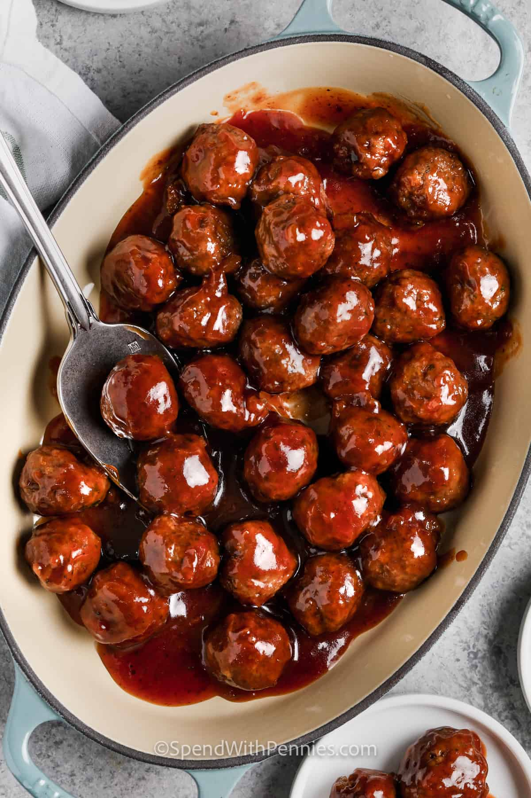

Cocktail Meatballs

Description
These tasty meatballs will disapper quickly at your party.
These do well in a slow cooker. You can keep them warm throughout
your event.
Ingredients
- 1 pound lean ground beef
- 0.5 cup bread crumbs
- 3 tbsp minced onion
- 2 tablespoons water
- 1 large egg
- 1 8 oz. can jellied cranberry sauce
- 0.75 cup chili sauce
- 1 tbsp brown sugar
- 1.5 teaspoons lemon juice
Directions
- Gather ingredients and preheat oven to 350 F.
- Mix ground beef, bread crumbs, onion, water, and egg together
in a large bowl. Form into small meatballs and arrange on a
non-sticking baking sheet. Bake for 20 to 25 minutes, turning
over once.
- Stir cranberry sauce, chili sauce, brown sugar, and lemon juice
in a large saucepan over low heat until smooth. Add meatballs.
Simmer 1 hour before serving.